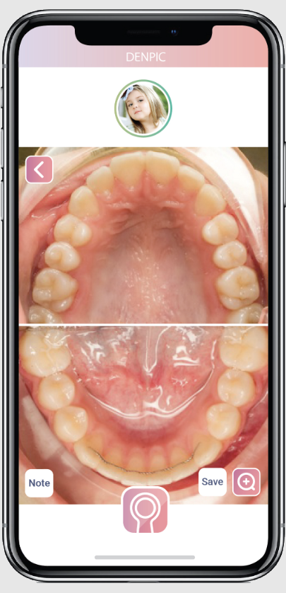
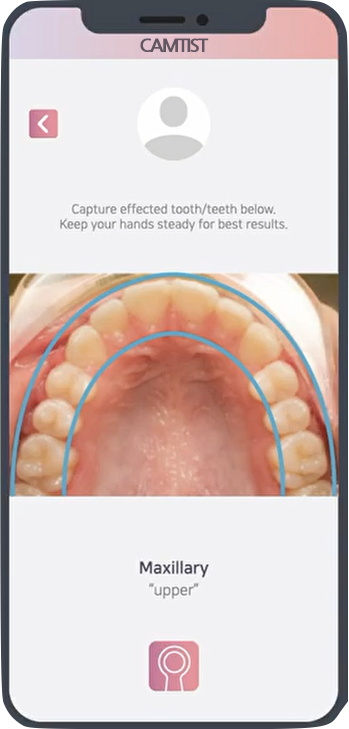
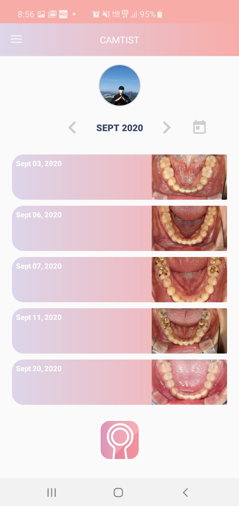
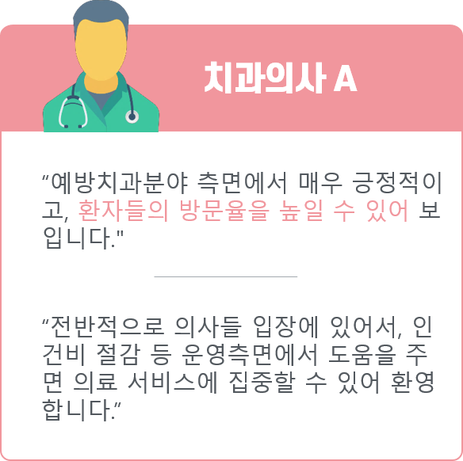
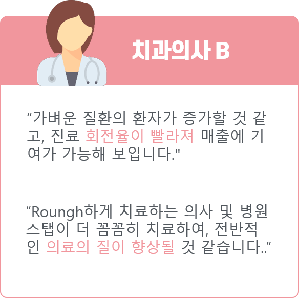
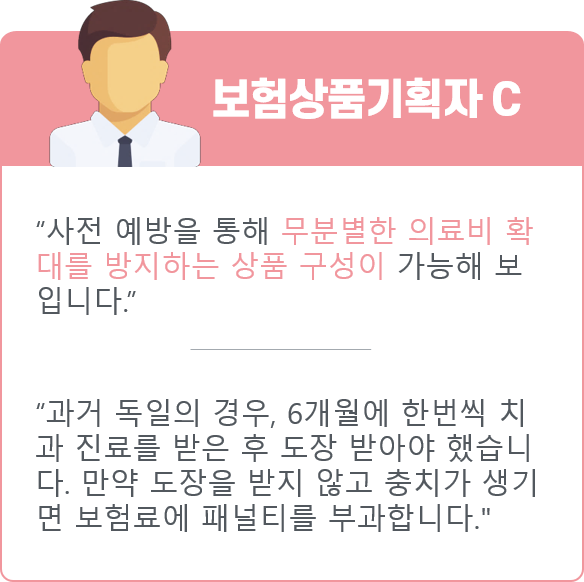

Why Denpic
사람들은 치아에 통증을 느낀 후 치료의 목적으로 치과를 방문하는 경우가 대부분입니다. 그래서 위노베이션은 치아 통증을 느끼기 전에 치아를 관리하고 치아 질환을 예방할 수 있는 방법을 생각했습니다. 그 결과, 위노베이션은 캠티스트라는 보급형 구강관리기기와 AI 분석을 통한 구강질환 자가 검진 솔루션을 개발하였습니다. 사용자들이 언제 어디서든 자신의 치아 상태를 확인하고, 미리 치아 관련 질환들을 예방하고, 방지하여 건강한 치아를 유지할 수 있도록 하였습니다.

전악 촬영
사용자 편의성을 고려하여 손쉽게 구강내 전악 촬영 가능하여 전체치아 분석과 개별치아 분석이 동시에 가능함

셀프 촬영
촬영 가이드를 제시하여 고화질의 통일성 있는 구강 사진 촬영이 가능하며 데이터를 실시간으로 분석하여 제공함

일관성
일관성 있는 데이터 획득하여 지속적으로 분석 정확도를 향상시키며 시간에 따른 변화를 감지하여 분석함
Expert Interview


